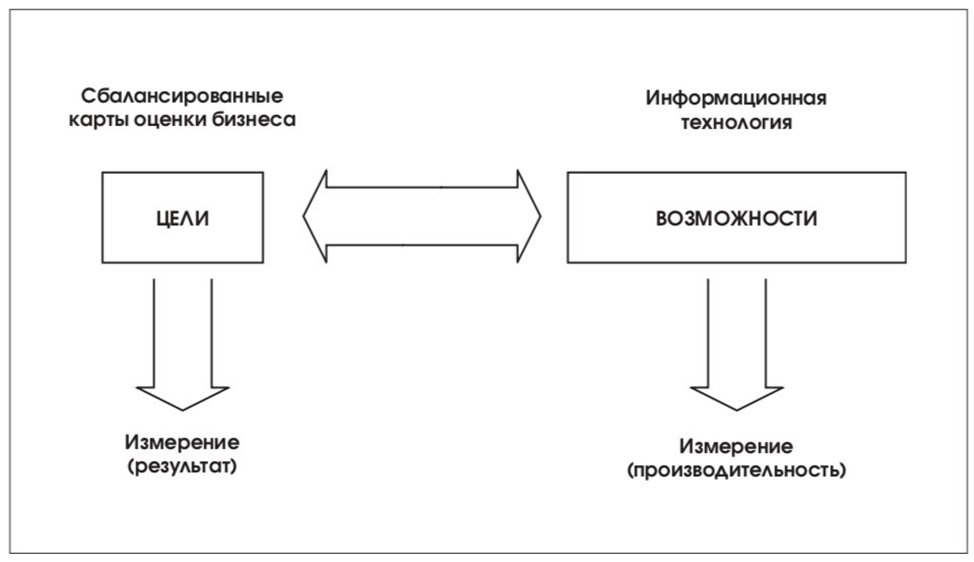

Принципы управления
Принципы управления, книга стандарта CobiT, описывающая управление ИТ – одна из последних разработок Института Управления ИТ, пополнившая перечень книг CobiT в 3-ем издании стандарта.
Управление ИТ – составная часть успеха в управлении предприятием, которая гарантирует рациональное и эффективное совершенствование всех взаимосвязанных процессов предприятия. Управление ИТ предоставляет основу, которая связывает ИТ-процессы, ИТ-ресурсы и информацию со стратегией и целями организации, что позволяет максимально эффективно использовать информацию, повышая капитализацию и получая конкурентоспособные преимущества.
Принципы управления созданы для того, чтобы помочь руководителю ИТ ответить на три стратегических вопроса:
- Существуют ли в настоящее время в организации Информационные Технологии, при управлении которыми "удовлетворяются" все информационные потребности организации?
- Как организация обеспечивает инфраструктуру и управляет рисками, насколько организация зависит от этого?
- С какими проблемами организация сталкивается при управлении ИТ?
Чтобы получить ответы на эти стратегические вопросы необходимо непрерывно отвечать на «тактические» вопросы:
- Что является результатом ИТ-процессов?
- Что является решением проблем в ИТ?
- Из чего состоят эти решения?
- Будут ли работать эти решения?
- Как их реализовать?
Управление информационными технологиями
Управление информационными технологиями стало неотъемлемой частью корпоративной стратегии.
Эффективное управление информационными технологиями позволяет компаниям оставаться конкурентоспособными.
Модели зрелости ориентированы на системное управление информационными технологиями в условиях роста.
Для того чтобы управление информационными технологиями приносило ощутимую пользу, необходимо опираться на стандарты.
В современных организациях управление информационными технологиями тесно связано с управлением рисками.
Сбалансированное управление информационными технологиями обеспечивает достижение бизнес-целей.
Построить надежное управление информационными технологиями можно через внедрение методологий.
Результативное управление информационными технологиями предполагает использование ключевых индикаторов.
Отношение бизнес-целей и ИТ
Для получения ответов на «тактические» вопросы в книге Принципы управления CobiT, включены Модели Зрелости, Критические Факторы Успеха (КФУ), Ключевые Индикаторы Цели (КИЦ) и Ключевые Показатели Результата (КПР), это дополнение позволило получить качественно улучшенный подход к вопросам управления ИТ, который отвечает потребностям руководителей в части управления и контроля. Предоставляя руководителю организации инструмент управления и измерения ИТ на соответствие тридцати четырем ИТ-процессам, определенным в CobiT.
В настоящее время информационные услуги преобладают над прочими поддерживающими бизнес услугами. Таким образом, ИТ становятся одним из первостепенных показателей бизнеса. Как следствие – отношения между бизнес-целями с их единицами измерения и ИТ с его целями и единицами измерения являются очень важными и могут быть изображены следующим образом:

Создание такой взаимной связи поможет руководителям в контроле над информационными технологиями организации, отвечая на следующие вопросы:
- О чем беспокоится руководство организации? Необходимо удостовериться, что выполняются все потребности организации.
- Где измеряется удовлетворение потребностей? Результат бизнес-процесса представлен на сбалансированной карте оценок бизнеса как Ключевой Индикатор Цели.
- Затрагивают ли проблемы, возникающие в ходе реализации бизнес-процессов, информационные технологии организации? ИТпроцессы своевременно предоставляют организации правильную информацию, позволяя ее бизнес-процессам эффективно и бесперебойно функционировать. Это является Критическим Фактором Успеха для организации.
- Где это измеряется? Ключевой Индикатор Цели, основанный на сбалансированной карте оценки, представляет ИТ-информацию, сопоставимую с критериями информации (Эффективность, Продуктивность, Конфиденциальность, Целостность, Пригодность, Согласованность, Надежность).
- Что еще должно быть измерено? Если ответы на первые вопросы – положительные, должно быть учтено влияние множества Критических Факторов Успеха, которые должны быть измерены как Ключевые Индикаторы Результата для ИТ-процессов.
Необходимость "измерения" процессов организации обусловлена важностью непрерывного совершенствования ИТ, что создает потребность в комплекте инструментов для контроля. При этом трудно определить необходимый уровень совершенствования и остановиться на нем. Перед руководителями в коммерческих и некоммерческих организациях часто возникают задачи оценить объемы инвестиций в ИТ и инфраструктуру, при этом далеко не все могут обосновать инвестиции, отвечая на вопрос: «Как далеко необходимо зайти, и будут ли оправданы затраты выгодой?». Принципы управления CobiT призваны ответить на этот вопрос и помочь в обосновании инвестиций в ИТ.